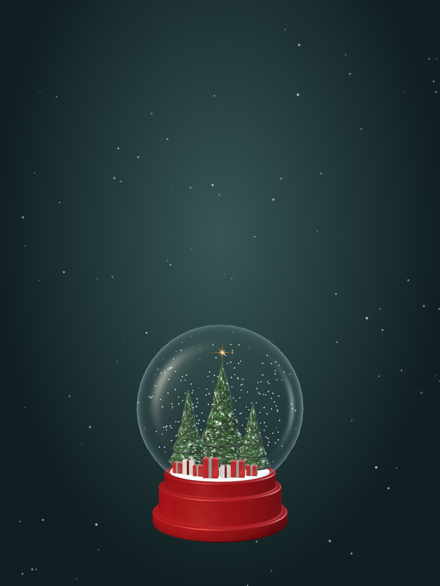
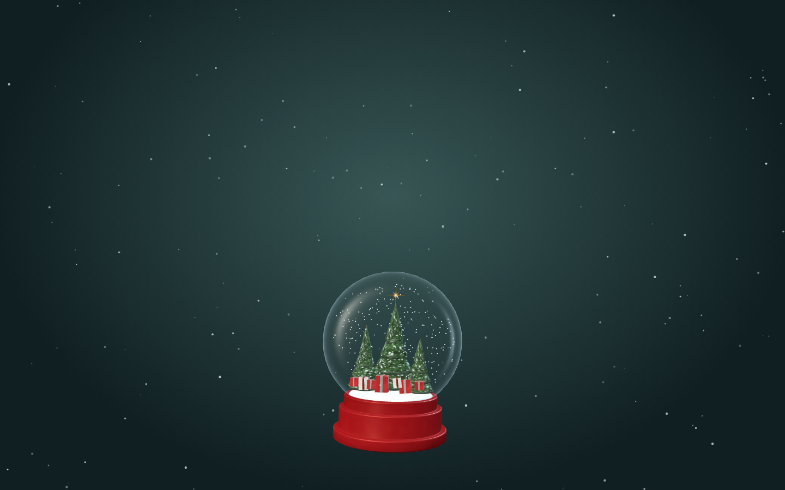

You are a front-end developer experienced with Three.js and browser-based interactive graphics. Build the interactive 3D Christmas globe on the existing
x-mass-globe.htmlpage.Implement the following in
x-mass-globe.html:
- Interactive 3D globe rendered with Three.js, displaying a Christmas-themed globe as the centerpiece of the page. Use the page's existing structure and styling; add the Three.js setup (scene, camera, lighting, renderer) within it.
- Snow animation inside the globe, with particles falling continuously and looping smoothly, so the scene feels like a classic snow globe.
- Desktop interaction: when the user clicks the globe, it shakes. The shake should read as a physical snow-globe motion: a brief, decaying oscillation of the globe with the snow particles reacting to it, settling back to rest.
- Mobile and tablet interaction: when the user shakes the device, the globe shakes the same way. Use the device motion (accelerometer) events, request permission where the browser requires it (such as iOS Safari), and throttle so one physical shake triggers a single shake animation rather than many.
Keep the implementation self-contained in this page unless a dependency is clearly needed; load Three.js from a standard CDN import or the library the page already uses. Ensure the scene resizes correctly with the window and that the animation runs smoothly on both desktop and mobile without leaking memory from repeated shakes or resizes.
The page should work on desktop, tablet, and mobile, and the click shake and motion shake should produce the same visual effect.
Remove button controls, move model to the bottom of the page, add snow effect for the whole page
User should be able to rotate globe on desktop and mobile. Only horizontaly.
add more realistic light to the globe to improve 3D effect of the glass
When globe shakes, move randomly presents inside.
The scene places the Christmas diorama at the bottom and adds snowfall across the viewport. Click, keyboard and device motion share the rocking and snow-agitation routine. Horizontal drag and arrow keys rotate the globe about its vertical axis.
Three.js 0.187.0 renders the model and a dynamic point cloud. A fixed 2D canvas draws ambient snow using the same clock. Both entry points contain the same inline implementation. mountAnimation resolves to an object with play, pause and destroy methods. CONFIG holds camera, performance, shake and sensor settings.
The glass material uses its surface normals and viewing direction to reflect warm and cool studio lights. Reflection strengthens at grazing angles while the center stays clear. The model root owns the horizontal rotation, and its child pivot handles the shake. Pointer movement locks to the dominant axis after a short threshold, which separates drags from tap and shake gestures. The ten presents get individual hop height, timing, direction and tilt on each shake. Each box and ribbon set shares the same transform while the two original meshes keep their draw calls. The presents return to the authored layout when the shake ends. Snow recycles at the dome boundaries. During the 1.25-second shake, a decaying envelope rocks the pivot and increases the fall and swirl of the snow. The camera frames the model from container bounds. Reduced motion gets a still frame, and hidden, off-screen and paused scenes stop their render loop.
All activation routes enter the same shake function.
if (!running || shakeTime < settings.shakeDuration) return;
shakeTime = 0;The remaining shake time controls both rocking and snow agitation.
const remaining = 1 - shakeTime / settings.shakeDuration;
const envelope = remaining * remaining;Drawing buffer resolution follows the stage with a capped pixel ratio.
const pixelRatio = Math.min(window.devicePixelRatio || 1, settings.maxDpr);
renderer.setDrawingBufferSize(width, height, pixelRatio);Horizontal drag changes only the model root’s yaw.
rotateGlobe((event.clientX - drag.lastX) * settings.dragRotationSpeed);Reflection increases toward the glass silhouette.
float facing = clamp(dot(normal, viewDirection), 0.0, 1.0);
float fresnel = pow(1.0 - facing, 5.0);Cleanup aborts the event listeners and disconnects container observers.
events.abort();
sizeObserver.disconnect();
visibilityObserver.disconnect();From the repository root, run python3 -m http.server 8080 and open http://localhost:8080/x-mass-globe.html. Use HTTPS for mobile motion access. Adjust fallSpeed, shakeAngle, shakeDuration, desktopSnowCount and motionThreshold in the inline configuration. The README lists every configurable setting.
Chromium rendered the model at all three viewport sizes and responded to a container-only resize. The globe stage reached the bottom of the viewport, ambient snowfall animated, and the page had no separate buttons. Click hit testing, keyboard activation, reduced motion, a simulated permission request on first activation, motion debouncing and canvas teardown passed. Mouse and emulated touch drags changed only yaw, vertical mouse movement left yaw unchanged, and drag release did not shake the globe. A subsequent tap still shook it, and arrow-key rotation worked under reduced motion. The revised glass shader compiled without console errors. Screenshots show the warmer left reflection, cooler right reflection and a more visible rim at each viewport. Click and simulated device shakes produced different present poses. A sampled box and ribbon maintained their relative distance through the hop. The geometry returned to its original positions at rest and when reduced motion was enabled during a shake. The desktop shake sample used six draw calls, 5,307 triangles and 260 points, with zero observed long tasks. Geometry and texture counts stayed at six and five across repeated shakes and resizes. Browser testing used the installed copy of the pinned Three.js package, and the CDN module URL returned HTTP 200 separately. The Vite production build emitted the globe page and its GLB.


The palette complements the supplied model. The reaction is tuned for a brief hand-held shake with fewer snow points on narrow displays. The browser checks used synthetic sensor events. Permission and hardware sensitivity on physical iPhones, tablets and Android devices remain unverified.